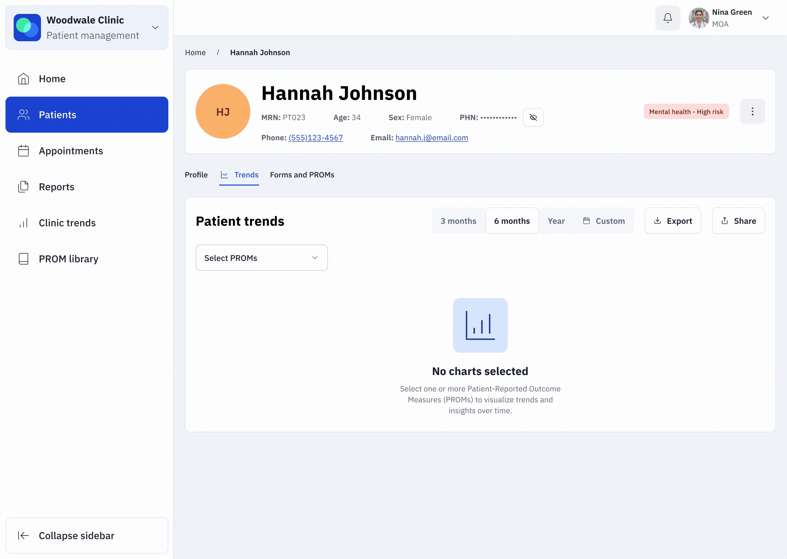
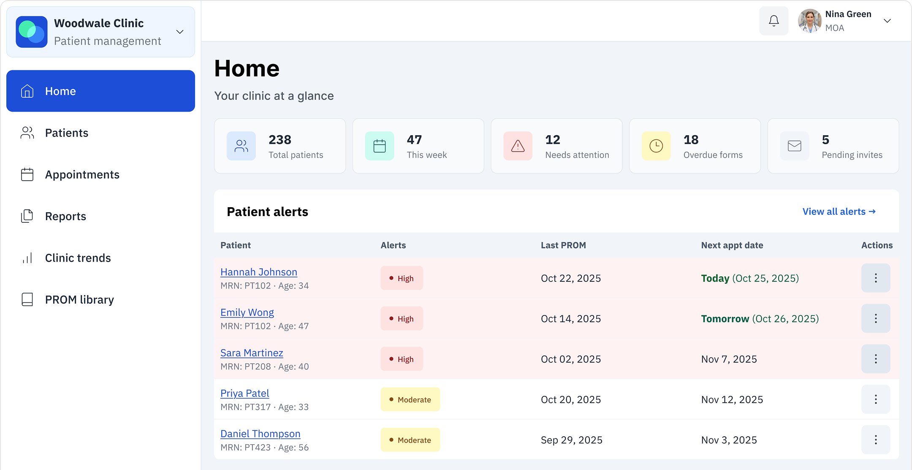
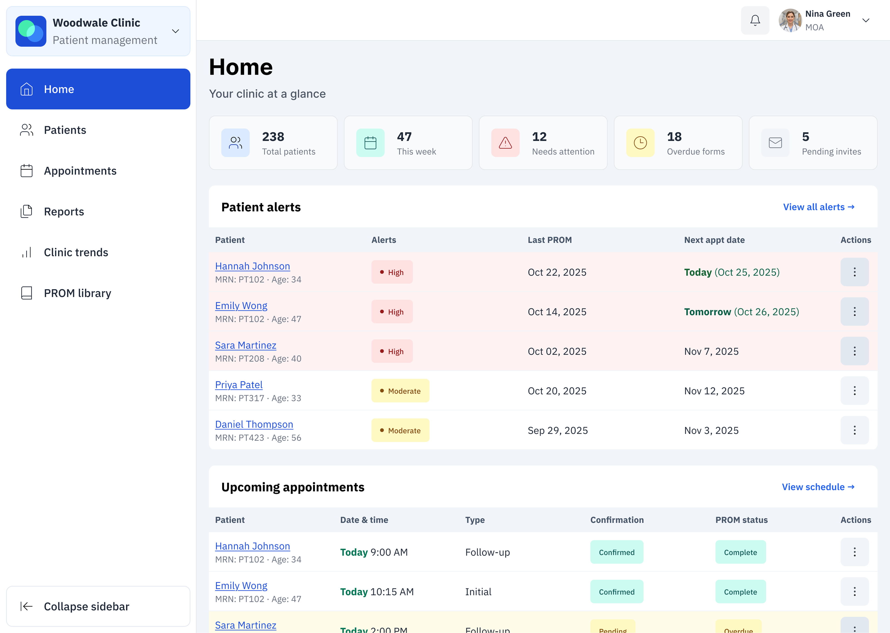
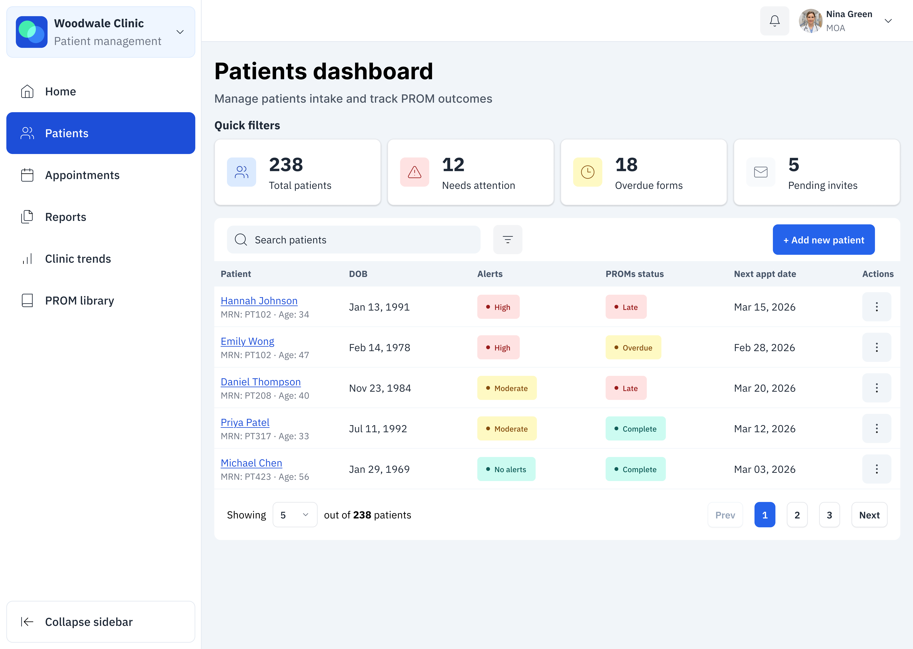
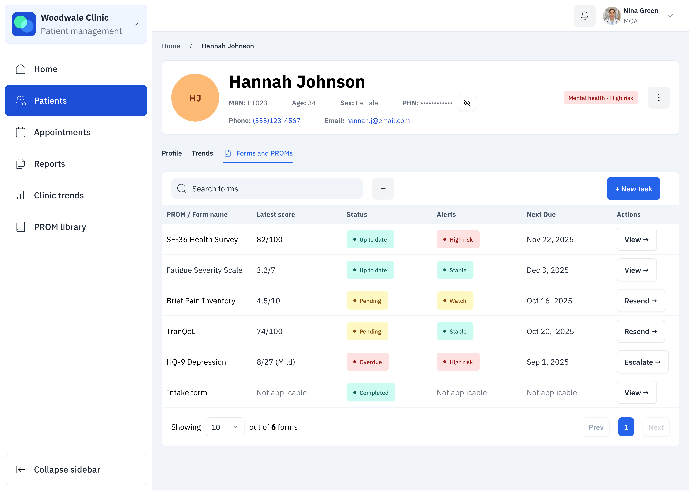
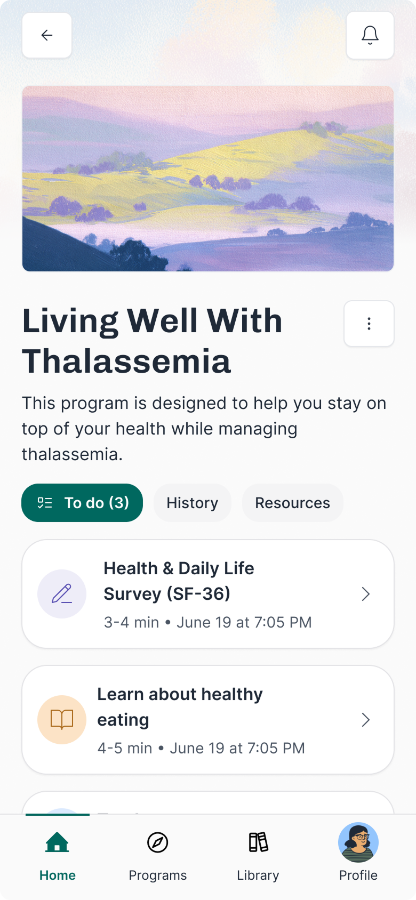
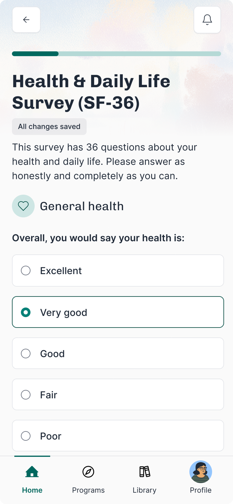

I interviewed 15 clinicians, MOAs, and admin staff to map out workflow pain points.
Everwell
Achieving a 98% form compliance and helping clinicians spot trends

Project overview
What’s Everwell?
Everwell collects patient-reported data, automatically organizes it, and surfaces the insights clinicians need to make fast informed decisions.
Why does this matter?
In a pre-Everwell system, high-risk patients were being missed because of slow manual review.
Everwell’s impact
- 98% form completion rate (up from 20%)
- Clinicians spotted trends 60% faster
- Patients’ understanding improved by 65%
My role
- Designed the Trends feature and data-visualization patterns
- Ran interviews and user tests with clinicians, MOAs, and patients
- Created reusable UI patterns to support quick onboarding of new clinics
- Collaborated with product, engineering, and clinical teams to validate and ship features
+ I was told I also helped keep morale up when things got hectic :)

Background and pain points
Patients with chronic conditions needed to regularly complete forms, including PROMs (patient-reported outcome measures).
Providers relied on paper forms to collect patient data. Patients filled them out during visits, making it hard to track progress over time.
Patient
Oh man, I keep forgetting to bring my form. Can’t we just do this online?
Provider
We have stacks and stacks of paper to sort through.
It’s impossible to see any trends, patient-specific or
clinic-wide.
Then the clinic introduced an old-school digital system that didn’t solve the users’ problems either…
Patient
I don’t like this app! The forms are too clunky and confusing, and it’s hard to use on my phone.
Provider
I spend ages chasing patients for updates. And still can’t see who needs help first!
So they came to us for a whole new digital system revamp.
What we needed to do
-
Simplify forms to allow providers to focus on patients and not paperwork
-
Turn data into simple visuals that help clinicians quickly see who needs attention
-
Build a system that can grow easily for new clinics and care programs
Research & findings
I also analyzed competitor dashboards and reviewed PROM score data to better understand the data we’re aiming to chart.
HMW help providers easily
monitor patient progress
and identify those at risk?
There was a lot of manual review of PROMs and patients, so the clinicians wanted a digital solution that would help them move faster
It was especially important for them to quickly spot the declining patients
5 out of 6 clinicians preferred to see the data represented visually (and not as tables, numbers, text, etc.)
Design approach
-
The clinicians needed to make decisions quickly, so above all, the designs needed to help them move fast
-
Raw data is out (it’s overwhelming!), clean visual dashboards are in!
-
Iterative thoughtful approach and regular cross-functional check-ins
Important: balancing between doing enough testing and how much time busy providers were willing to offer for testing.
Design highlights
Home page
This is where clinicians start their day. Instead of digging through paper forms or relying on memory, they now get a clear patient list with needs highlighted. Here’s who’s prepared for their visit (and who isn’t), here’s what your team is working on.
Designing for faster triage
Opted for risk-ranked alerts instead of a big alphabetical patient list so clinicians can instantly see who needs help first, with fallback tags to make sure no one gets missed.

Patient dashboard
When you’re managing dozens of patients, you need to find people fast. This dashboard lets clinicians search, filter, and immediately see who needs attention today. An overdue form, a concerning score, or an upcoming visit: they can see it all at a glance.
Fast and easy filters
Chose to emphasize simple one-tap quick filters rather than a full advanced filter panel so clinicians could quickly narrow the patient list. This reduced cognitive load and avoided interrupting their workflow, while still allowing deeper filtering when needed.

Patient profile
Clinicians used to spend ages piecing together a patient’s story from scattered forms and notes. Now they open one page and immediately see: is this patient improving? Declining? What’s changed since last visit? They have everything they need to make quick yet informed decisions.
Balancing cognitive load with essential alerts
I collapsed the insights panel by default to reduce cognitive load and make the page easier to scan. But I made one exception: high-risk alerts auto-expand. The last thing anyone wants is for the clinician to scroll by an urgent alert because it wasn’t noticeable enough!

Patient trends
Raw scores didn’t tell you much on their own. This view turns them into actionable visual trends that show if something is improving or declining, with comparisons between different health measures and a plain-language summary that highlights exactly where a patient might need help.
Visualizing the data
I chose visual trend charts over tables or PDFs because clinicians were losing time interpreting raw numbers. Color-coded lines made declines obvious, tooltips added context when needed, and raw data stayed one click away. In the end, clinicians spotted concerning trends 60% faster.

Forms and PROMs
All of a patient’s questionnaires live in one place, with clear visual status showing what’s done, pending, overdue, or flagged as high-risk. Clinicians can take action immediately (send a reminder or review a form) without suffering context switching or worrying whether they’ve missed something critical.
To AI or not to AI, that is the question
The team considered auto-generating summaries to save time, but the patient data was too inconsistent and AI use could’ve created clinical risk. Instead, I designed clear status indicators paired with quick filters and urgent flags. Clinicians could review fast and avoid the danger of AI misinterpreting potentially incomplete or messy data.

Patient experience
I designed the totally different experiences for the same system: clinician-facing precision and dense data, but patient-facing simplicity and encouragement. The patient side uses friendly language, supportive visuals, and large tap targets.
Bite-sized forms
Patients were abandoning long forms. I split them into smaller chunks with clear time estimates, grouped similar questions so it didn't feel random, and showed progress along the way. People could actually finish without getting exhausted, which meant better data for clinicians.


Outcomes
98%
60%
65%
and self-management
For patients…
The redesign turned “scary” clinical PROMs into friendly check-ins with simple language and clear time estimates.
This boosted engagement, raising completion from 30% to 98%, with 72% of patients reporting higher motivation to track their health.
For providers…
Clinicians gained real-time into alerts, overdue tasks, and score trends. These visualized dashboards cut the time to identify concerning trends by 60%, giving clinicians back time for patient care and follow-up.
For business…
The modular design made it easy to scale the platform to new clinics and specialties. This flexibility saved time, reduced costs, and supported Everwell’s growth into new markets.
If continued, I would...
-
Add an opt-in AI assistant that gives recommendations, answers questions, and motivates users.
-
Create AI summaries and mood check-ins to help caregivers and users stay informed.
-
Build smart AI-powered routines that adjust based on what the user reads, watches, and completes.
More of a nudge than a strict prescription, though!
Learnings
What worked well
Designing with future needs in mind helped us avoid expensive rework, and regular user testing caught problems early before they slowed us down. Working closely with clinicians, designers, and engineers also made sure the product stayed practical and safe.
What I’d do differently
I’d invest in stronger accessibility from the start, add smarter notification filters to cut down on alert fatigue, and bring patient feedback in even earlier to guide decisions.
Most proud of
Turning raw healthcare data into simple, useful insights for clinicians and patients, and building a platform that can keep growing as new clinical needs come up.
Thank you for reading!
Explore other case studies using the buttons below.